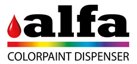

Curriculum Vitae
from 03/2018
Alfa dispenser srl

Programmatore Python ed Assistente gestione Software
Terminato il periodo di tirocinio, le mie mansioni sono diventate di maggior rilievo.
Oltre a proseguire con le attività di sviluppo e mantenimento delle piattaforme Alfa, mi occupo di attività complementari come:
Assistente alla gestione Software Alfa;
Help Desk lato clienti per soluzioni relative al software Alfa;
Referente IT per l'interfacciamento dei protocolli di comunicazione Alfa con software di terze parti;
Creazione di tools interni per differenti dipartimenti aziendali.
from 10/2017 to 03/2018
Alfa Dispenser srl
Tirocinio formativo
Dopo un periodo iniziale di formazione sulle tecnologie utilizzate, mi sono occupato di:
Sviluppare e mantenere delle piattaforme software sviluppate internamente (es: migliorato sistema di localizzazione del software, integrato nuove features, eseguito bug fixing);
Generare e mantenere una documentazione riguardante i protocolli di comunicazione del software Alfa;
Creare alcuni tools distribuiti ai team del Service dei nostri clienti;
Gestire e migliorare un sistema di distribuzione software complesso.
from 11/2016 to 12/2016
Softweb srl
Tirocinio Curriculare
Durante le 125 ore del tirocinio, mi sono occupato di sviluppare alcune applicazioni mobili demo, app per ambiente iOS sviluppate col linguaggio Swift.
Nel periodo trascorso alla Softweb, ho avuto modo di:
sviluppare le app tramite l'architettural pattern MVC
implementare dei REST Services
effettuare dei test implementativi con la libreria OpenCV
from 02/2016 to 12/2016
Monosand
Consulente
Sviluppatore e tester app iOS
Mi sono occupato di testare applicazioni work in progress, rilasciando feedback sulla usabilità e riportando eventuali bug o glitch.
Sotto la supervisione di uno sviluppatore iOS, ho iniziato un breve ma intenso percorso formativo sullo sviluppo di applicazioni per iOS, utilizzando il linguaggio Swift.
La collaborazione è iniziata in loco e successivamente è proseguita da remoto.
Connect with me
La cura per la noia è la curiosità. Non ci sono cure per la curiosità.
(Dorothy Parker)